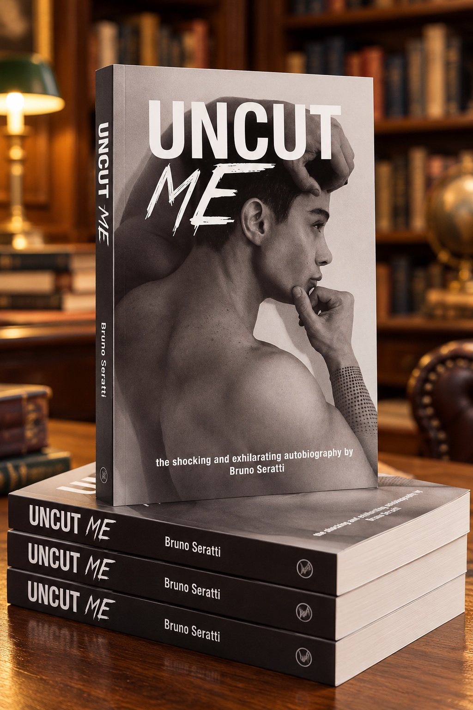
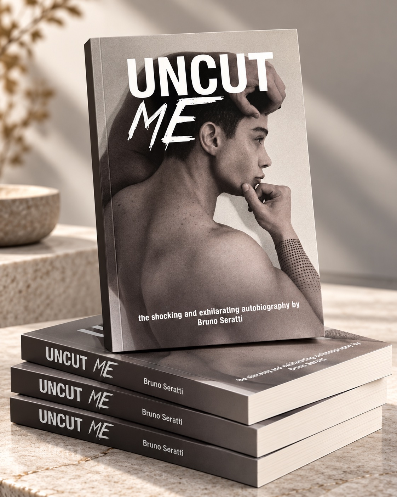
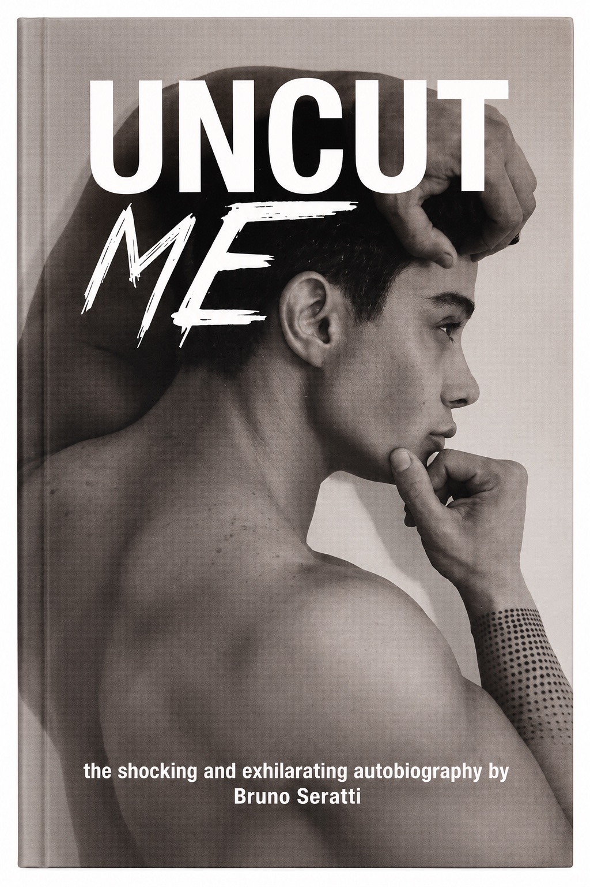
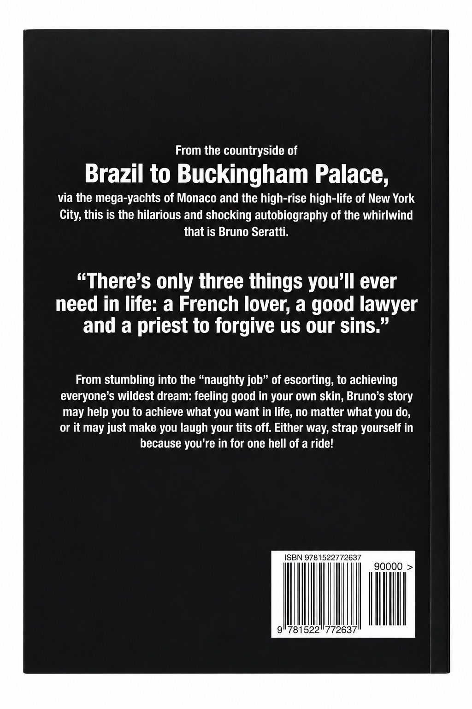

Brazil
Where the story begins—in the countryside, before the world opened up.
The autobiography of Bruno Seratti

One extraordinary life worldwide
From the Brazilian countryside to Buckingham Palace, via Monaco's mega-yachts and New York's high-rise high life.

This is the hilarious and shocking autobiography of the whirlwind that is Bruno Seratti.
From stumbling into the “naughty job” of escorting to pursuing the dream of feeling good in your own skin, Bruno tells it straight: the glamour, the chaos, the reinvention and the lessons picked up along the way.
It might help you chase what you want. It might simply make you laugh out loud. Either way, strap yourself in—you’re in for one hell of a ride.
Read the spoiler-free summaryThere’s only three things you’ll ever need in life: a French lover, a good lawyer and a priest to forgive us our sins.
— Bruno Seratti
Where the story begins—in the countryside, before the world opened up.
A new chapter, new rooms and an unforgettable brush with Buckingham Palace.
Mega-yachts, rarefied circles and a life lived at full volume.
High-rise ambition, reinvention and the city that never edits itself.
A candid autobiography told with wit, nerve and the confidence to leave the rough edges exactly where they belong.
The glamour and the mess, the confidence and the doubts—nothing airbrushed.
Sharp observations and outrageous situations, delivered with Bruno’s unmistakable voice.
Twenty-six photographs bring the people, places and changing eras into the story.
Hold the whole story
The original paperback edition pairs the full memoir with its stark monochrome cover—a physical copy to read, lend and keep. The physical edition will be available securely through Amazon Marketplace.
Find the paperback on AmazonPrint ISBN 978-1-5227-7263-7



Start instantly on Kindle, or order the original paperback for your shelf.